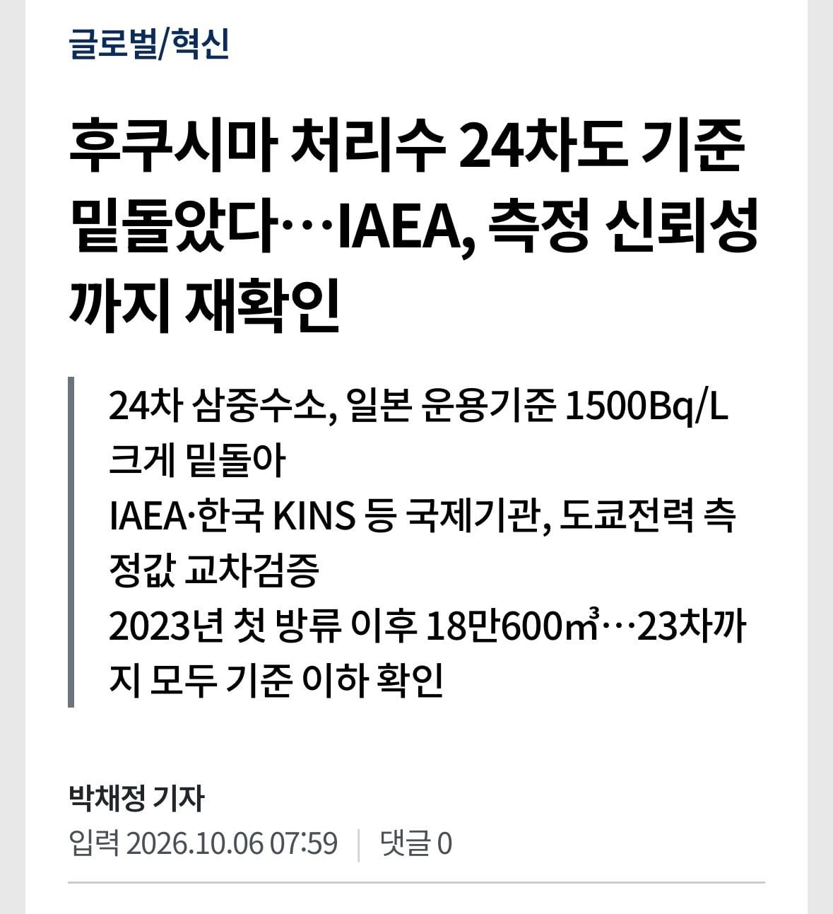
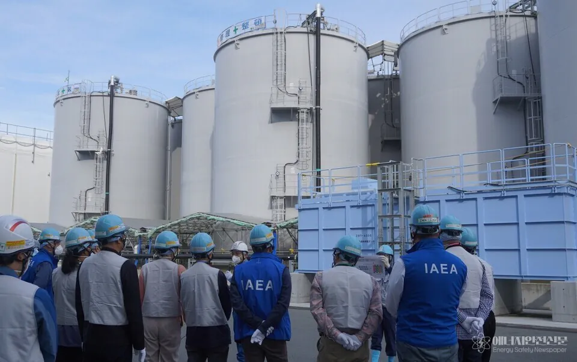
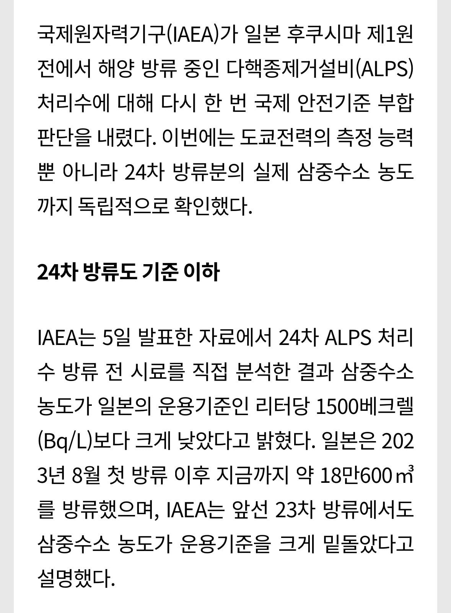
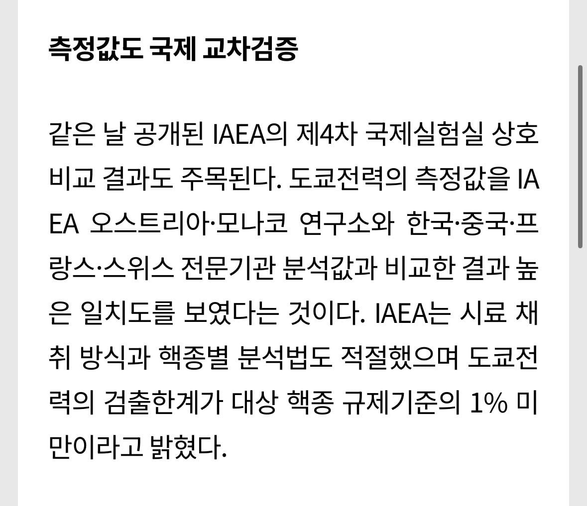

https://www.esnews.kr/news/articleView.html?idxno=6646




반일중뽕단과 일뽕단 댓글보러 왔습니다
이거 보고 궁금한게 있는데 미국이나 다른 나라에서 태평양에서 핵폭탄 여러번 터트려는데 그건 괜찮아?
일단 난 잘 살고있으니 괜찮은 것 같아!
그래그래 잘 관리하고 있구만 다른 것처럼 조작하지는 말고
애초에 다 없어지려면 90년 걸린다는데 그때까지 살 사람이 없으니 지금 당장 갑상선암이고 뭐고 해봐야 잊혀질수 밖에 없음
삼중수소는 이미 자연에 존재하는 물질임. 양도 비교가 안 되게 많다. 뇌송송구멍탁 때 레파토리를 그대로 반복하고 계십니다.
후쿠시마 원자력 사건때 초장부터 제대로 대처했어도 믿을까 말까였는데 일본 정부,도쿄 전력 모두 이 새끼들 똑바로 하는 거 맞아? 하는 생각이 들 정도로 따로 노는 모습 보여줬고
한 시민이 총리 관저에 드론으로 후쿠시마 흙 뿌린 걸 테러라고 했던 모습이 불을 더 지폈지
예전 광우병 사건때하고 비슷했어
포티들의 정신병+ 저거 검증하고 음모론때문에 피해본 국내산업에 낭비된 예산이 조단위라서 욕쳐먹어도 싸긴함
좆포티정치병자들 발작하네 ㅋㅋㅋ